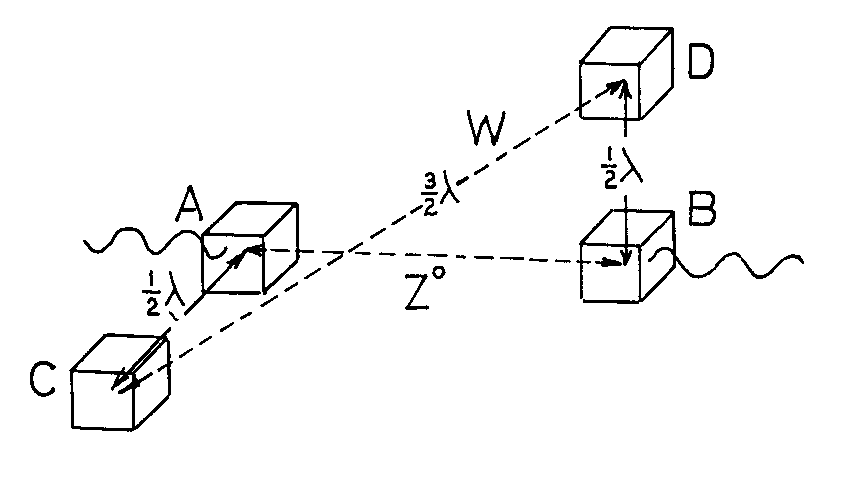

Several years ago, in 1986, whilst I was a Visiting Senior Research Fellow at the University of Southampton, progress in my theoretical research was rapid and I was avidly writing papers and seeking publication. The success I had is evident from the Bibliography in these Web pages. However, most of the papers I offered to mainstream physics periodicals were rejected on superficial scrutiny by their editors and referees. In retrospect, going through the resulting piles of manuscripts in an effort now to bring order into my affairs, there are some I cannot destroy. One such paper is now reproduced as this Essay, to show those in academia what they have turned away from, as they strive to explain in their own mysterious way, what has already been explained so much better in my writings. I will let the paper speak for itself and simply say here that reference No. 5 in the paper was published in Physics Letters in 1986 (see reference 1986k in the Bibliography of these Web pages).
The physical derivation of a formula f(n)=4(1+8n)4/3 is shown to lead to the measured values of W+/- and Zo via the simple expressions W++W-=f(2) and Zo=f(2)-f(l), giving mass in proton units. W+/- and Zo are 82.0 and 93.8 GeV, respectively.
It is well known that the discovery in 1973 of the electrically neutral weak interaction mediated by the Zo boson led to the specific prediction of the mass properties of W+/- as well as Zo bosons. These part-empirical mass values were well confirmed by the CERN collider experiments, which measured:
However, from a recent theoretical investigation concerning the diffraction of single neutrons and the concept of the 'imprisoned' photon [2], the author has reason to believe that a multi-photon mechanism involving a standing wave resonance can feature in the properties of particles and their interactions. This has given results having a quite remarkable bearing upon the measured properties associated with the W and Z bosons of electroweak theory. The results are summarized below.
Essentially, there are four propositions, each of which will be justified separately following their introduction.
Proposition I: When a proton P+ and an antiproton P- collide at high energy and come to rest suddenly, each forms into a cluster of N particles of energy Ec grouped in what will be termed a 'photon spin lattice'. The combined energy of the two clusters is given by 2NEc and has three critical threshold values given by:
Proposition II: A standing wave resonance can be set up so as to confine energy in such a system, provided there are four 'photon spin lattice' units, relatively disposed in an orthogonal configuration of characteristic spacing equal to half the de Broglie wavelength relevant to the energy involved. Two quanta of the EW form are involved in each such complex.
Proposition III: The above system can decay by producing a charge pair W+, W-, where W+/-=EW. Thus, writing:
Proposition IV: An alternative decay mode for the double EW system is for it to release energy by degrading the value of n. Thus a change of n from 2 to 1 will release a neutral energy quantum Zo given by:
The numerical masses of the two bosons found in electroweak actions are, therefore, suggested by the theory supporting the above propositions.
Next, considering proposition II, this arises from a photon theory which involves the spin state of a 3x3x3 lattice whose lattice sites can be occupied by energy quanta, such as those denoted Ec above. The energy in this case, where the action involves borrowing energy by vacuum fluctuations and treats a property of the vacuum, has a virtual character. However, the spinning unit mediates in propagating energy sourced in a material quantum source (the basis of E=hf, where E is photon energy, f is the wave frequency and h is Planck's constant) and, in addition, the spin energy of the EW quanta can equate to, or be identified with, the kinetic energy of the material particle. In the latter case we have the scenario of the 'imprisoned photon', mentioned above.
The theory gave an evaluation of the fine-structure constant as 1/137.0359 in 1972 [3]. Recently, at a NATO Workshop on Quantum Violations [4], the author explained the basis of the spin energy, and the connection via four spin units with the de Broglie wavelength and both electron and single neutron diffraction is also of separate record [5]. However, to facilitate discussion here, it is noted that the spin energy of a photon unit can be written as Hw/2, where H is its angular momentum and w its angular velocity. The unit is cubic in form and in rotating it nudges surrounding lattice at four times its speed of rotation. The radiated frequency f is, therefore, 4w/2(pi). The value of H is h/2(pi) when f is mec2/h, the Compton electron frequency. Therefore, at a lower frequency f, H will be h2f2/2(pi)mec2. The energy Hw/2 is then h2f2/8mec2 per 'photon spin lattice' involved. If we equate this to the kinetic energy of the electron, namely mev2/2, we find that, provided there are four spins involved, the wavelength c/f is equal to h/mev, which is the de Broglie wavelength.
The purpose of this is to show that a particle containing 'imprisoned' photons must have four units in spin and analysis [5] shows that they can set up standing waves confined to the particle with no external radiation provided they have an orthogonal grouping with three acting to contain by interference the radiation from the central spin. By virtue of their quantum correlations which are effectively instantaneous, the four spins can only act to suppress wave radiation if the orthogonal spacing is an odd multiple of, or equal to, half de Broglie wavelength. Of course, the diffraction of the particle involves this standing wave system being disturbed and then radiation from the four spins cooperates to redirect the electron along a diffracted course, with the spins regrouping in a new orthogonal system.
It is then of interest to ask how these four spins may be configured in order to release radiation along an axis AB when they have equal amplitude.
A modified orthogonal grouping of the form illustrated in Fig. 1 is indicated. Photon spin units are seated at A, B, C and D, with AC, AB, DB mutually orthogonal.

Fig. 1. Orthogonal configuration of spinning lattice units with standing waves at AC, CD and DB restricting radiation to the path AB.
C prevents radiation escaping from A and B in a direction perpendicular to AB in the plane ABC, provided AC=LB/2, where LB is the de Broglie wavelength involved. D prevents radiation from A and B escaping in the direction perpendicular to AB in the plane ABD, also provided DB=LB/2. When C and D mutually preclude their own radiation directed along the line CD (a condition demanding that CD=3LB/2 for the most compact system) then A and B shed energy along the axis AB. The reason is that AB is not an odd multiple of LB/2 for the related value of CD.
Now, the spins at C and D are seen as related to the EW quantum, making CD the W axis shown in the figure and allowing us to associate AB as the Zo axis of the abstract space determined by the spin grouping. The angle between the W and Zo axes, on this basis of definition, is given by:
Reverting now to Proposition I, the task is to justify equation (1). This involves the hypothesis that a particle such as the proton will retain a specific characteristic regardless of the energy it acquires in being accelerated to relativistic speeds. This characteristic has the dimensions of volume. It can be regarded as a measure of the
space occupied collectively by N particles sharing that energy regardless of the speed of the particle. For example, if we assign an action distance c(t') to an energy component Ec, then the N summation of (ct')3 will be constant and the energy of the particle will comprise the summation of all Ec terms. By writing:
The idea of a 3x3x3 cubic lattice group in spin, equally populated at each of the four locations shown in Fig. 1, suggests symmetry and balance. For an occupancy by the Ec quantum at the centre of each unit and a spin about a coordinate axis through this centre, there are 24 possible sites for other Ec quanta, 8 in each of three planes normal to the axis. If only the central plane is filled by the Ec quanta, we have N=1+8. If we have the symmetrical case of occupancy of all the sites in the two outer planes except the axial positions, then N=1+2(8). Finally, if the central plane is filled as well, N=1+3(8). The basis of equation (1), which relates to a pair of spin lattice units, is then clear.
Propositions III and IV really amount to an analogy with conditions in the hydrogen atom. If the kinetic and potential energies of a bound pair of electric charges are absorbed completely, then the charges have been separated. On the other hand, if the energy can adopt specific levels, then the charges can adjust their mutual positions and there is energy transfer but no release of electric charge.
It follows, therefore, that the ability to account for the numerical properties of the W+/- and Zo bosons by formulae which are very simple need not be fortuitous. The formulae presented are connected with physical processes which have bearing upon other phenomena as well.
In particular, single particle diffraction may well depend upon the four-photon spin feature discussed above [5] and the 3x3x3 photon lattice form is essential to the derivation of the precision value of the fine-structure constant [3].
Finally, since only further experiment can determine whether this theory has validity, it is noted that the theory predicts a W boson, based on f(l), and another W boson based on f(3), respectively at energies 35.13 GeV and 137.2 GeV. Conceivably, there could be another Zo boson for the f(3) to f(l) decay and this would have an energy 204.1 GeV.
[1] I. R. Kenyon, Eur. J. Phys., v.7, 115 (1986).
[2] L. Kostro, Physics Letters, v.107A, 429 (1985).
[3] H. Aspden and D. M. Eagles, Physics Letters, v.41A, 423 (1972).
[4] H. Aspden 'The Theoretical Nature of the Photon in a Lattice
Vacuum'; paper presented at NATO Advanced Research Workshop on "Quantum Violations: 'Recent and Future Experiments and Interpretations', June 23-27, 1986, University of Bridgeport, Conn., USA. (Proceedings to be published).
[5] H. Aspden, 'A Causal Theory for Neutron Diffraction'. (In press; data to be supplied before publication of submitted paper).
[6] I. R. Kenyon, Eur. J. Phys., v.6, 41 (1985).
[7] G. Arniston et al, Physics Letters, v. 122B, 103 (1983).
The above is the text of the paper submitted for publication in 1986. Since that time, the Zo boson has been measured to a higher degree of precision and is now said to have a mass-energy value close to 91 Gev. I am therefore tempted to suggest that there is some interplay between the process involving the supergraviton creation and the decay of the of 93.9735 GeV energy quantum discussed in the above account. Nature has a way of holding energy levels for a longer period if there is some tuning or resonance in the interaction between the numerous pseudo-particle forms that feature in such high energy activity. What we measure, with precision, may well be a transient level of decay held for a longer time, the source energy at the moment of initial creation being slightly higher than that measured value. For this reason I see the derivation linked to the supergraviton in Essay No. 3 as particularly relevant, but so far as the observation of the Weinberg angle for the W and Z boson production, that signals the process disclosed above in this Essay No. 4. The onward step I now recommend is to turn attention to a technological topic deeply rooted in physics having indirect bearing on what has been discussed here concerning energy quanta that approximate 101 atomic mass units (that is ~ 94 GeV).